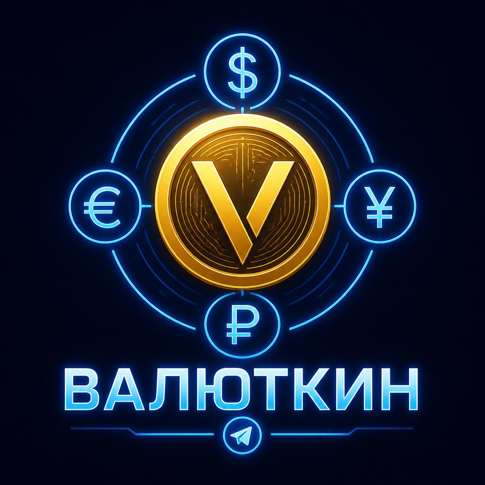

01 · СОЗДАТЬ КОПИЮ
Зашифровать данные
В файл попадут только ключи Валюткина из локального хранилища. Сеансы авторизации, пароли и ключи кошельков не экспортируются.

ВалюткинЛОКАЛЬНОЕ ШИФРОВАНИЕ
Перенесите настройки, Академию, поездки, рынки и watch-only на другое устройство в одном зашифрованном файле.
01 · СОЗДАТЬ КОПИЮ
В файл попадут только ключи Валюткина из локального хранилища. Сеансы авторизации, пароли и ключи кошельков не экспортируются.
02 · ВОССТАНОВИТЬ
Сначала файл расшифровывается в памяти браузера. Перед заменой данных Валюткин покажет количество найденных записей.
Содержимое файла нельзя прочитать без пароля. Каждая копия получает новую случайную соль и уникальный IV.
Supabase-сеансы, банковские реквизиты, seed-фразы, приватные ключи и содержимое других сайтов не собираются.
Откройте Vault на новом устройстве, выберите файл, введите пароль и подтвердите восстановление.